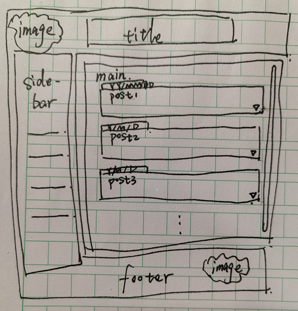

小周同学的博客
这是我的个人博客，记录学习与生活。
一直听着别人的话，不断改变自己规划好的路径太头疼了
还是坚定一个目标一直走下去吧，从此面对除了是高人之外的指点都不为所动
专注一个事，总会有成果的！
我现在就决定了：
先搞张老师的项目
然后计算机图形学学起来
之后谁想跟我说什么妄想改变我的路径的我都不想听，（老师的话要听的
网站美化的事情先放一边。

网页透明化清新 nga 式配色，有背景图。手机、电脑端布局不同
*** 使用 flexbox 来布局：
* 左侧导引列：使用 iframe 不跳转地展示右部内容
* +右侧大部分内容页（上部网页标题、下部以文章为载体，时间顺序从新到旧，进行一个个预览陈列，提供展开详细页，并在当前页面展开而不跳转）
详见下：
title\sidebar\footer 连为一体，呈现一体式的透明感，右侧 main 中的 posts 采用平滑展开的预览方式，
title 和 main 之间使用小人跳跳跳的动效
左下角使用滑钮切换 day\night
整体风格呈现出现代的高级感+小清新，避免过于锐利
希望 sidebar 和 content 也能扩展至两遍，可以留出更多空隙
content 内容由 sidebar 的 iframe 引导
每分区由顶图由分区主题变换而变换
header 和 footer 的图用那两张，都放在右侧，左侧放重要文字